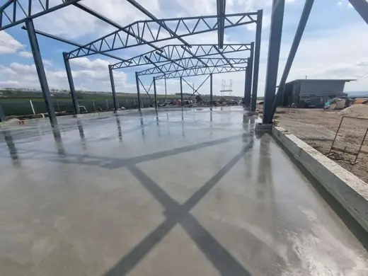
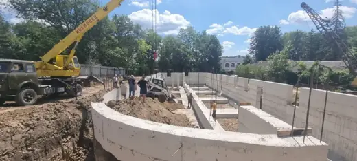
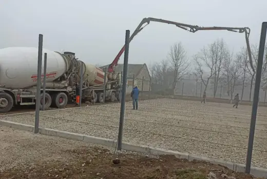
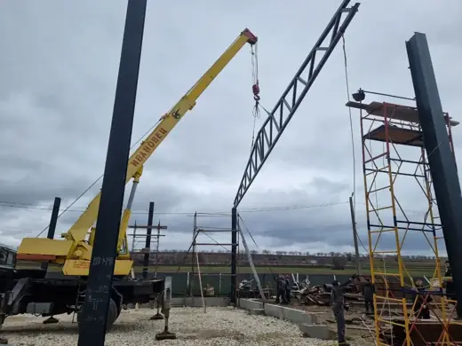
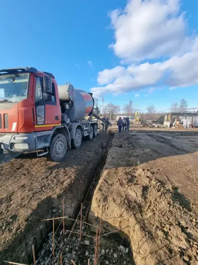
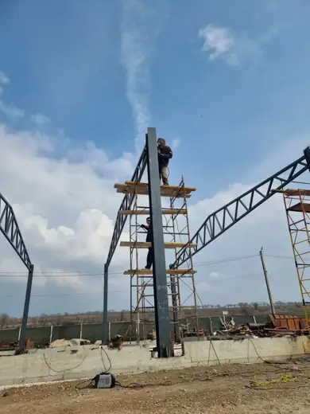
Construcții civile
Case, blocuri și clădiri comerciale la roșu sau la cheie.
- Fundații
- Zidărie
- Acoperiș
- Finisaje
Lucrări de construcție pentru clădiri rezidențiale și comerciale, rețele de apă și canalizare, demolări controlate și un magazin cu piese și consumabile pentru vulcanizare.
O singură echipă de la groapa de fundație până la racordarea la rețea. Lucrăm pentru persoane fizice, firme și instituții publice.






Case, blocuri și clădiri comerciale la roșu sau la cheie.
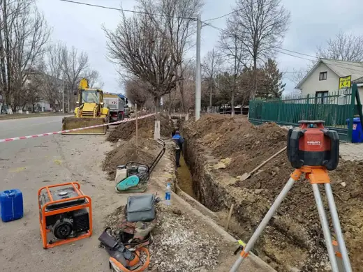
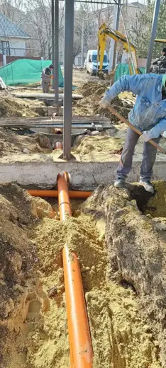
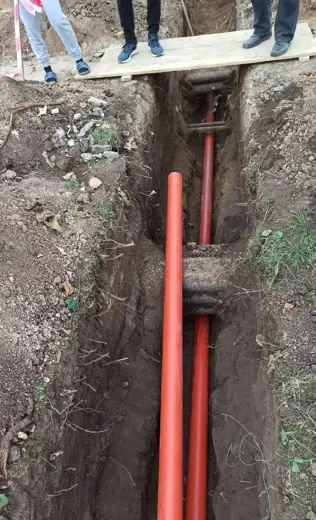
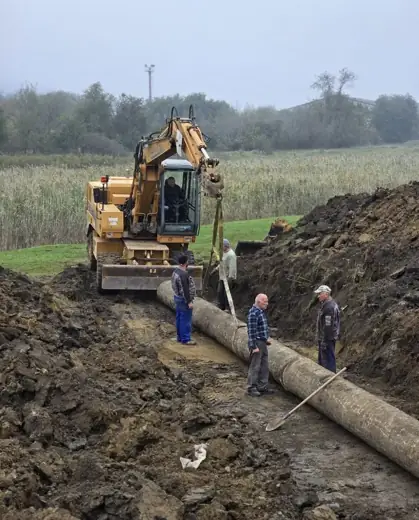
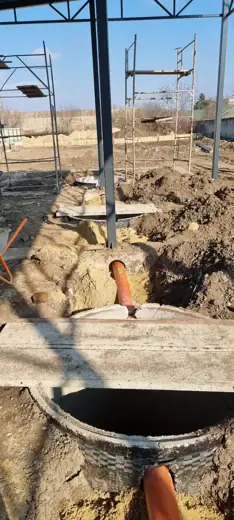
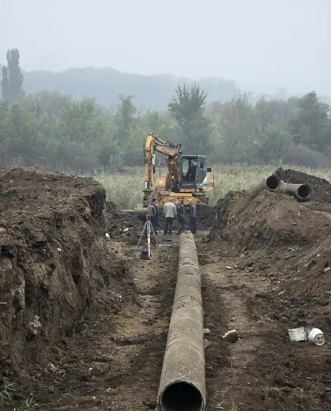
Racordări la rețeaua publică, rețele exterioare și interne, cămine de vizitare.
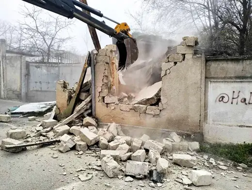
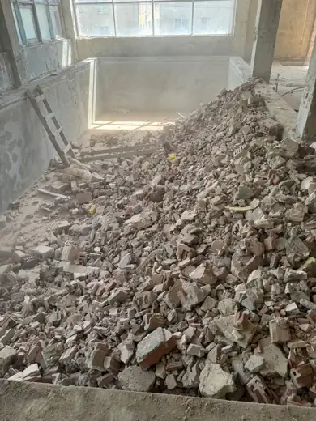
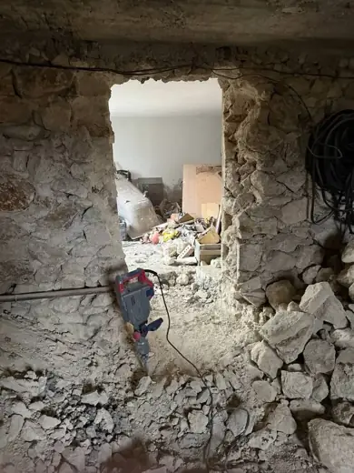
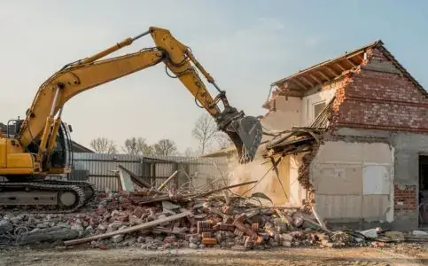
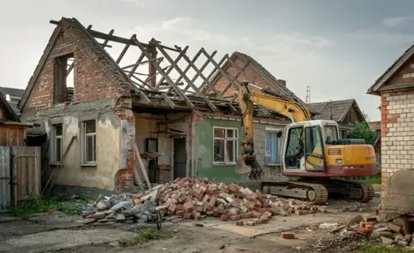
Demolare manuală și mecanizată, desfacere construcții vechi, evacuare moloz.
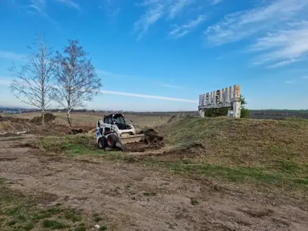
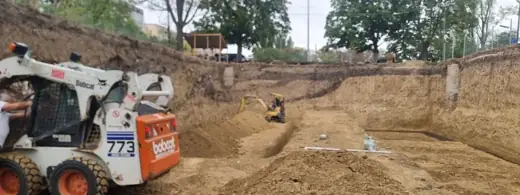
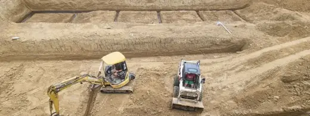
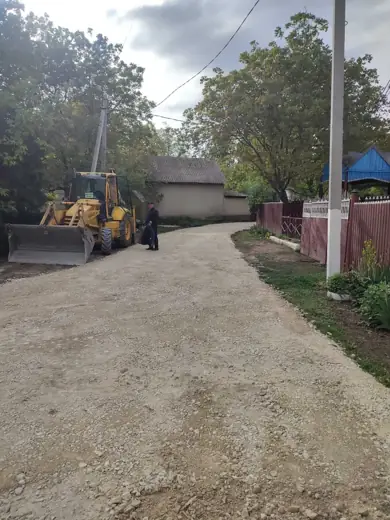
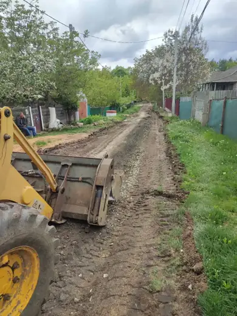
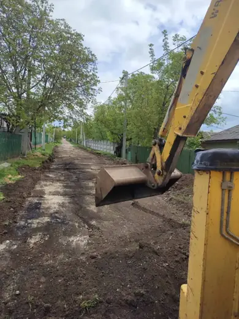
Săpături, nivelări, umpluturi și pregătirea terenului pentru construcție.
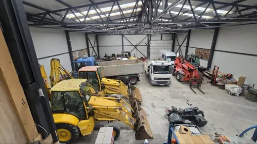
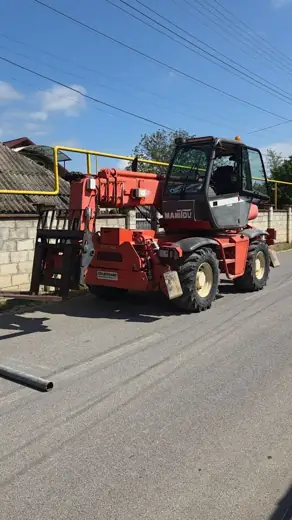
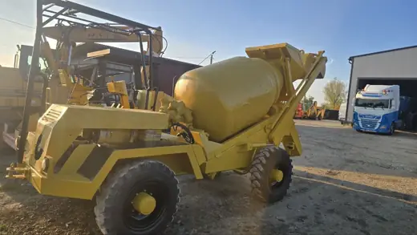
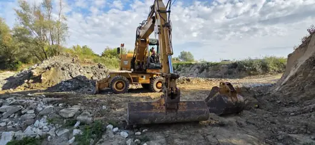
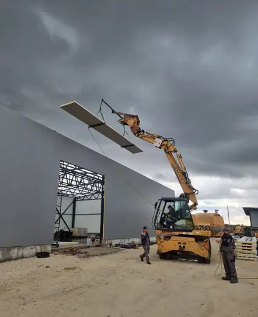
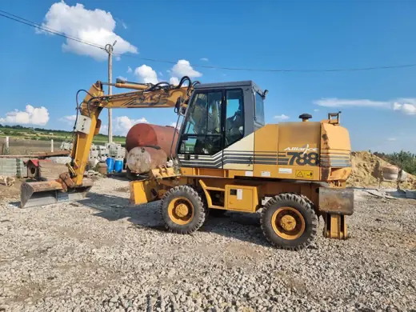
Mașini de construcție — buldozer, mașină betonieră, excavator și altele.
Utilaje și aparate pentru vulcanizare și repararea anvelopelor.
Desfacem construcții vechi în siguranță, separăm materialele și lăsăm terenul pregătit pentru lucrare. Evacuăm molozul cu transportul nostru.
Programează o evaluareSpune-ne ce ai de construit sau de demolat. Revenim cu un deviz.